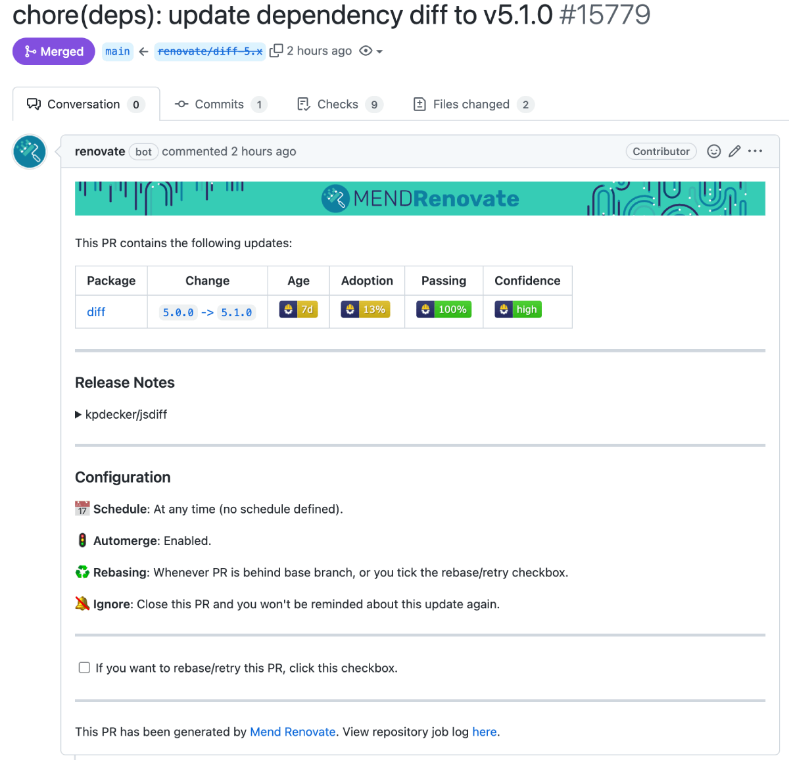

Introduction¶
You can choose to automate some dependency updates by letting Renovate automerge its PR. Renovate will wait for the required tests to pass before it automerges.
Renovate automerges take time¶
Renovate automerges take time, so Renovate can't automerge a PR the second it passes your required tests. Before you start troubleshooting, wait! Give Renovate about two hours, so Renovate can run in a state where your tests have passed, and the PR branch is up-to-date with the base branch. If you or others keep committing to the default branch then Renovate cannot find a suitable gap to automerge into!
After Renovate automerges a branch, Renovate must calculate the "Git state" again, for all remaining branches. Merging one branch may result in another branch's updates being changed, or even removed as no longer needed. Renovate requires automerging branches to be up-to-date with their target branch, before automerging. As merging more than one branch in a row does not work reliably, Renovate will only automerge one branch/PR, per target branch, per run. Then you'll have to wait for the next time Renovate runs.
Recommendations from the Renovate maintainers¶
In general, we recommend you enable automerge for any dependency update where you would select "merge" anyway. Keep automerge disabled for updates where you want to read the changelogs or code before the merge.
Automerge often works well for devDependencies.
It can work for production dependencies too, but your project should have good test coverage.
For example, if you have Jest or Mocha as a development dependency, and it has an upgrade with passing tests... automerge them! If you have a linter like ESLint or TSLint and its update passes... automerge them! If you have an API with 100% test coverage and Express is updated... automerge it!

Configuration examples¶
Automerge lock file maintenance¶
The lowest risk type of update to automerge is probably lockFileMaintenance.
When Renovate performs lock file maintenance, it leaves the project dependency definitions unchanged, but refreshes the lock file completely.
This means Renovate installs the latest versions, that match the package file constraints.
{
"lockFileMaintenance": {
"enabled": true,
"automerge": true
}
}
Automerge lint tool updates¶
Automerging lint tool updates can be a real time-saver. Often a new lint tool version pass the updated tests, without any code changes on your end. If the tests pass you may as well automerge the PR.
In cases where you need to make changes to your code, the Renovate PR will fail the linter check. You can then make the necessary code changes directly in the Renovate branch for that PR, confirm the tests pass with your changes, and manually merge the PR.
{
"packageRules": [
{
"matchDepTypes": ["devDependencies"],
"matchPackageNames": ["lint", "prettier"],
"automerge": true
}
]
}
Automerge non-major updates¶
Non-major updates in SemVer ecosystems shouldn't have breaking changes (if they follow the spec), so many users enable automerge for these too:
{
"packageRules": [
{
"matchUpdateTypes": ["minor", "patch"],
"matchCurrentVersion": "!/^0/",
"automerge": true
}
]
}
The matchCurrentVersion setting above is a rule to exclude any dependencies which are pre-1.0.0 because those can make breaking changes at any time according to the SemVer spec.
Automerge monorepo PRs¶
Say you want to automerge patch and minor updates for packages in the group:ionic-nativeMonorepo preset:
{
"packageRules": [
{
"extends": ["monorepo:ionic-native"],
"matchUpdateTypes": ["patch", "minor"],
"automerge": true
}
]
}
Faster merges with platform-native automerge¶
By default, Renovate uses platform-native automerge to speed up automerging.
If you don't want Renovate to use the platform-native automerge, then set platformAutomerge to false.
{
"lockFileMaintenance": {
"enabled": true,
"automerge": true,
"automergeType": "pr",
"platformAutomerge": false
}
}
For more information read platformAutomerge.
GitHub Merge Queue¶
Renovate supports GitHub's Merge Queue.
Read the GitHub Docs, managing a merge queue first.
The steps to enable GitHub's Merge Queue differ based on whether you use GitHub Actions or another CI provider.
GitHub Merge Queue overview page
GitHub has a page that shows all the PRs in the Merge Queue.
The page link follows this pattern: https://github.com/organization-name/repository-name/queue/base-branch-name.
For example, here's Renovate's main repository's Merge Queue overview.
If you use GitHub Actions¶
If you use GitHub Actions as your CI provider, follow these steps:
Add the on.merge_group event to your GitHub Action .yaml files, for example:
on:
pull_request:
merge_group:
On github.com, go to your repository's "homepage", click on Settings, scroll down to the Pull Requests section and enable the "Allow auto-merge" checkbox.
Then go to your repository's branch protection rules for your base branch (usually main) and enable the "Require merge queue" setting.
Confirm you've set the correct "required checks" for your base branch.
Finally, allow Renovate to automerge by setting automerge=true in your Renovate config file, for example:
{
"packageRules": [
{
"description": "Automerge non-major updates",
"matchUpdateTypes": ["minor", "patch"],
"automerge": true
}
]
}
If you don't use GitHub Actions¶
If you don't use GitHub Actions as your CI provider, follow these steps:
Update your CI provider's configuration so it also runs tests on the temporary gh-readonly-queue/{base_branch} branches, read your CI providers's documentation to learn how to do this.
On github.com, go to your repository's "homepage", click on Settings, scroll down to the Pull Requests section and enable the "Allow auto-merge" checkbox.
Go to your repository's branch protection rules for your base branch (usually main) and enable the "Require merge queue" setting.
Confirm you've set the correct "required checks" for your base branch.
Finally, allow Renovate to automerge by setting automerge=true in your Renovate config file (see earlier example).
Automerging and scheduling¶
Automerging is particularly beneficial if you have configured a schedule, because Renovate on its own may be able to automerge the majority of your updates.
And this is especially so if your repository needs rebasing, like when you use lock files.
Let's say you have dependencies abc and xyz with upgrades, and you use a yarn.lock file.
- At the start of the schedule,
Renovatewill create branches forabcandxyzupgrades, includingyarn.lockupdates - After
abcpasses tests,Renovatewill automerge it into the base branch - The
xyzbranch has ayarn.lockconflict now - Renovate will immediately check all other branches and rebase them
- The change to
xyzbranch will trigger another round of CI tests - After the updated
xyzbranch passes, Renovate will automerge it too
This is a lot better than you waking up to two PRs and then having to deal with conflicts yourself after you merge the first one.
Branch vs PR automerging¶
Even if you automerge PRs, you are likely to still get notification noise - one when the PR is created and another when it is merged.
For this reason we recommend you consider setting automergeType=branch which will mean:
- Renovate first creates a branch and no PR
- If tests pass, Renovate pushes a commit directly to the base branch without PR
- If tests fail, Renovate raises a PR for you to review
Add the renovate/** branch to your testing workflow files, or Renovate will not work properly with the automergeType=branch setting.
The result is that passing updates are essentially "silent" - the only sign of them are the commits Renovate pushes to your base branch. If you have enabled branch protection which prevents Renovate from automerging directly to the base branch, then this won't work and you should stick with the default PR-based automerging instead.
Assignees and Reviewers¶
When automerge is enabled on a PR, Renovate will not add assignees or reviewers at PR creation time, in order to decrease notifications noise a little. If tests subsequently fail, making automerge not possible, then Renovate will add the configured assignees and/or reviewers.
Note: Renovate won't add assignees and reviewers to a PR with failing checks if the PR already has assignees or reviewers present.
If there are accounts you wish to ignore (i.e. add assignees and reviewers regardless) then add them to ignoreReviewers to specify those which should be filtered out in such consideration.
Frequent problems and how to resolve them¶
Automerge not enabled correctly in config¶
Sometimes, the reason Renovate is not automerging a PR is because of a configuration mistake. You can confirm that Renovate knows you want it to automerge by checking if the PR body includes the text "Automerge: Enabled". If you see "Automerge: Disabled by config" it means you need to make a config change for automerge to work.
Absence of tests¶
By default, Renovate will not automerge until it sees passing status checks / check runs for the branch.
If you have no tests but still want Renovate to automerge, you need to add "ignoreTests": true to your configuration.
Tip
We strongly recommend you have tests in any project where you are regularly updating dependencies.
Committer restrictions¶
If you have protected your base branch with a list of allowed committers, and Renovate is not on that list, then naturally automerge can't work.
Pull Requests Required¶
If you have configured your project to require Pull Requests before merging, it means that branch automerging is not possible, even if Renovate has rights to commit to the base branch.
Required Pull Request reviews¶
If you have mandatory Pull Request reviews then it means Renovate can't automerge its own PR until such a review has happened.
If you're on github.com or GitHub Enterprise Server (>=3.4) you can let Renovate bypass the mandatory Pull Request reviews using the "Allow specified actors to bypass required pull requests" option in your branch protection rules.
Alternatively, if you use the Mend Renovate App, you can also install the helper apps renovate-approve and renovate-approve-2 and they will mark all automerging Pull Requests by Renovate as approved. These approval helper apps are only available for GitHub.
On Azure/Gerrit/Gitlab, you can activate the autoApprove option.
Codeowners¶
Depending on the platform, having a CODEOWNERS file could block automerging, because it means a code owner must review the PR.
Overriding global automerge¶
You might have setup a global configuration in a .github repository, that has a renovate.json file that turns on automerge for certain dependencies.
It does not matter where you've put the global config, the important point in this example is that you're extending from a global config that's somewhere else.
For this example we'll assume you put your config in a repository on GitHub, called .github.
Repositories in the organization all extend from this global configuration, and so they "inherit" the automerge settings as well.
To turn off automerge for all dependencies of a selected repository, you need to make a config that overrides all packageRules in the repository's renovate.json file, like this:
{
"$schema": "https://docs.renovatebot.com/renovate-schema.json",
"extends": ["local>org-name/.github:renovate-config"],
"packageRules": [
{
"matchPackageNames": ["*"],
"automerge": false
}
]
}